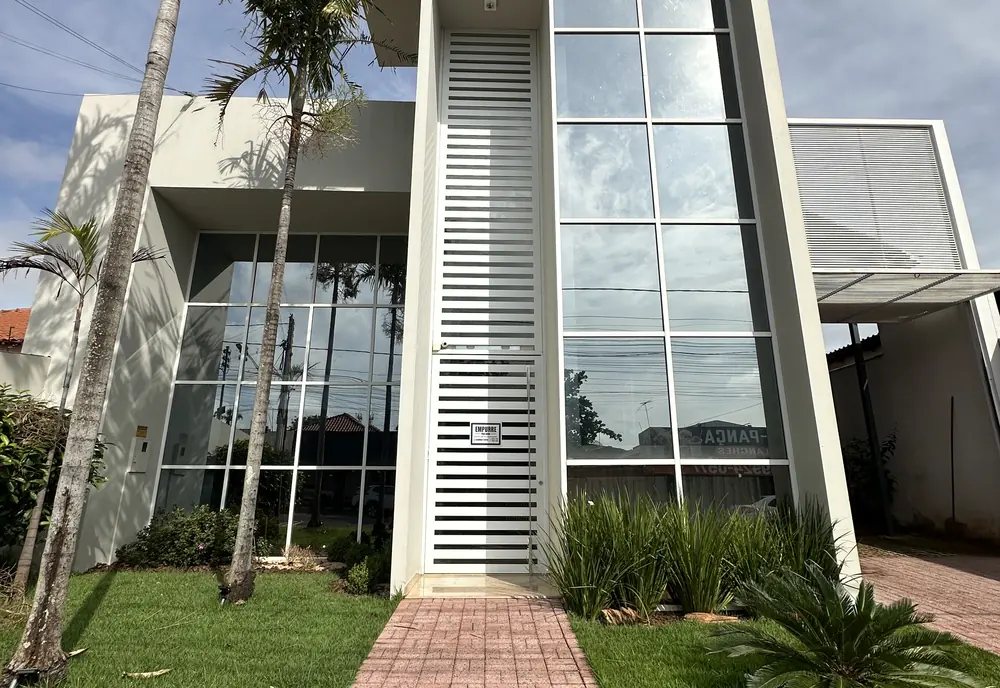

Sucessão e holdingA fazenda passa inteira, com a decisão combinada em vida.
A sucessão começa antes da necessidade. A família decide em vida quem cuida do quê, quanto custa passar e como a próxima geração entra.
Alguma destas frases já passou pela sua cabeça?
É assim que o trabalho começa: pelo que preocupa a família, não pelo nome do serviço.
-
“Não quero que meus filhos briguem por causa da terra.”
O que a Unitec fazA divisão é combinada em vida, com regras escritas para quem toca a fazenda e para quem não toca.
-
“Tenho medo de perder o comando do que construí.”
O que a Unitec fazQuem construiu continua decidindo. A estrutura garante isso no contrato e no acordo entre sócios.
-
“Ouvi dizer que inventário demora e custa caro.”
O que a Unitec fazO custo de passar o patrimônio é calculado antes: imposto, cartório e honorários de cada caminho.
-
“Não sei se holding serve para o meu caso.”
O que a Unitec fazNem toda solução serve para todas as famílias. A Unitec compara holding, doação e condomínio com a conta de cada um.
-
“Meu filho já toca a fazenda, mas tudo está no meu nome.”
O que a Unitec fazA transição é desenhada por etapas: quem administra, quem é sócio e como a renda é dividida.
O que entra no serviço
O nome técnico, e o que ele quer dizer na fazenda.
- Holding rural e patrimonial
- Uma empresa da família que passa a ser dona das terras e dos bens, com regras para entrar, sair e decidir.
- Condomínio rural
- A terra em nome de vários donos, com a parte de cada um registrada e a operação organizada.
- ITCD e ITBI calculados antes
- O imposto da herança ou da doação e o da transferência de imóveis, simulados antes da decisão.
- Acordo de sócios
- As regras da família por escrito: quem decide, quem pode vender e o que acontece se alguém sair.
- Contabilidade da holding
- A holding com contabilidade própria: lançamentos, livros, SPED Contábil e ECF, para funcionar de fato e não só no papel.
Como funciona, passo a passo.
- 1
Conversa
Com os dois lados da mesa: quem construiu e quem vai continuar.
- 2
Simulação
O patrimônio levantado e os caminhos comparados, com o custo de cada um.
- 3
Estrutura
Montada com o advogado e o cartório, no tempo da família.
- 4
Acompanhamento
A holding e o acordo funcionando ao longo dos anos.
Planejar em vida ou deixar para o inventário.
A mesma fazenda, dois caminhos. A diferença está em quem decide e em quando a conta aparece.
| Ponto | Sem planejamento | Com planejamento em vida |
|---|---|---|
| Quem decide | O processo de inventário, depois | A família, enquanto todos estão na mesa |
| O tempo | Pode levar anos, com a operação esperando | Etapas combinadas, no ritmo da família |
| O custo | Descoberto na hora, de uma vez | Calculado antes, caminho por caminho |
| A fazenda | Pode ser dividida ou vendida para pagar a conta | Passa inteira, com regras para quem fica e quem sai |
Perguntas frequentes
Vou perder o controle?
Não, se o controle for escrito. O fundador ou a fundadora pode seguir na administração da holding (Código Civil, art. 1.060) e doar as quotas com reserva de usufruto, que mantém o direito de administrar e receber os frutos (art. 1.394). O contrato social e o acordo de quotistas dizem como se vota e como se resolve um empate. A decisão continua sendo do produtor.
A holding acaba com o imposto da herança?
Não. A doação das quotas paga ITCD: em Goiás, de 2% a 8%, sobre o patrimônio da empresa a valor de mercado (Código Tributário do Estado de Goiás, arts. 77-B e 78). A holding muda o momento e a forma da transferência.
Quais são as desvantagens de uma holding rural?
O custo de entrar (ganho de capital, se a terra entrar acima do valor declarado, e às vezes ITBI), o custo de manter (contabilidade e obrigações de empresa todo ano) e as regras de sócio. Mal desenhada, ela cria o conflito que queria evitar.
É possível doar aos filhos sem holding?
É. A lei permite a partilha em vida, respeitada a parte dos herdeiros necessários (Código Civil, art. 2.018). É um dos caminhos que a conta compara.
E se um filho ou uma filha se divorciar ou tiver dívidas?
A doação pode levar a cláusula de inalienabilidade, que implica impenhorabilidade e incomunicabilidade: a quota não se comunica ao cônjuge e fica protegida de penhora, nos limites da lei (Código Civil, art. 1.911).
Antes de decidir, converse com a Unitec.
Conte o que está para acontecer na fazenda. A equipe responde pelo WhatsApp ou liga para você, em horário comercial.

- (64) 3632-3900Para quem prefere ligar
- Av. Goiás, 440, CentroJataí-GO, na mesma sede desde 1994
- Segunda a sexta, em horário comercialHorário em confirmação